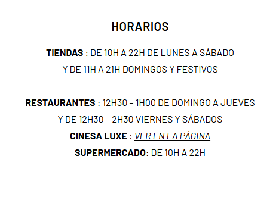

Horario
¿Como llegar?
Av. de los Pirineos, 7, 28850 Torrejón de Ardoz, Madrid
Transporte Público
- Renfe c2 c7
- Bus 6, 223, 824, alsa N202 Alma
Contactanos
Teléfono: 91 669 00 00
Email: contact@oasizmadrid.com
Av. de los Pirineos, 7, 28850 Torrejón de Ardoz, Madrid
Teléfono: 91 669 00 00
Email: contact@oasizmadrid.com

Wi-Fi Gratuito: Disponible en todo el recinto para que puedas mantenerte conectado durante tu visita.​
Espacio dedicado para que los más pequeños disfruten de actividades y juegos.
Diversión asegurada para niños con instalaciones seguras y entretenidas.
Facilidad para padres que necesitan preparar la comida de sus bebés.
Servicio disponible para mayor comodidad durante la visita.
Para personas con movilidad reducida, asegurando accesibilidad en todo el centro.​
Estaciones de Recarga para Vehículos Eléctricos: Oasiz Madrid cuenta con 120 unidades de carga I-ON, capaces de cargar simultáneamente hasta 241 vehículos. La carga es gratuita para todos los visitantes; solo necesitas escanear el código QR en cada unidad para iniciar el proceso. ​ Gewiss
Espacios cómodos distribuidos por el centro para relajarse entre compras o actividades.
Área exclusiva para clientes que buscan una experiencia más personalizada y tranquila.
Disponibles para refrescarse y mantenerse hidratado durante la visita.​
Punto de información para resolver dudas y obtener asistencia.
Facilitan el desplazamiento entre las diferentes plantas del centro.
Para consultar información del centro, tiendas y eventos.
Disponibles para realizar operaciones bancarias básicas.
Servicio de consigna para guardar pertenencias de forma segura.
Oficina para recuperar objetos extraviados durante la visita.
Disponible en caso de necesidad durante días lluviosos.
Área ajardinada para disfrutar de un entorno natural dentro del centro.
Servicio disponible para atender emergencias médicas menores.